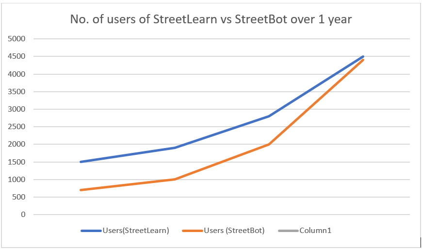
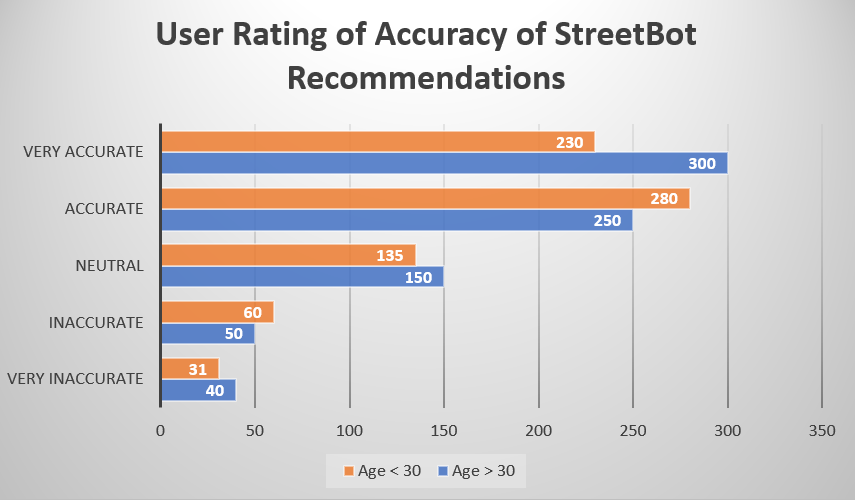

Here you can look at some of the statistics of StreetLearn. This page shows if StreetLearn is doing well, and to give general data insights as to how StreetLearn is doing. Here you can see various user trends, such as tutorial watch time, chatbot conversation time spent and so on.
Number of users over time
This graph shows the number of users over time. You may review the numbers shown on these graphs to deduce if StreetLearn is being utilized by many users.

User Rating of StreetBot Recommendations

This graph shows the accuracy of StreetBot recommendation when users are given a poll. "Very accurate" suggests that the algorithms used to find the most suitable match for training is excellent, as users feel that they have been recommended the right skills training. On the other hand, "Inaccurate" may suggest that the algorithms need work, and that StreetBot may not be suitable at certain times.